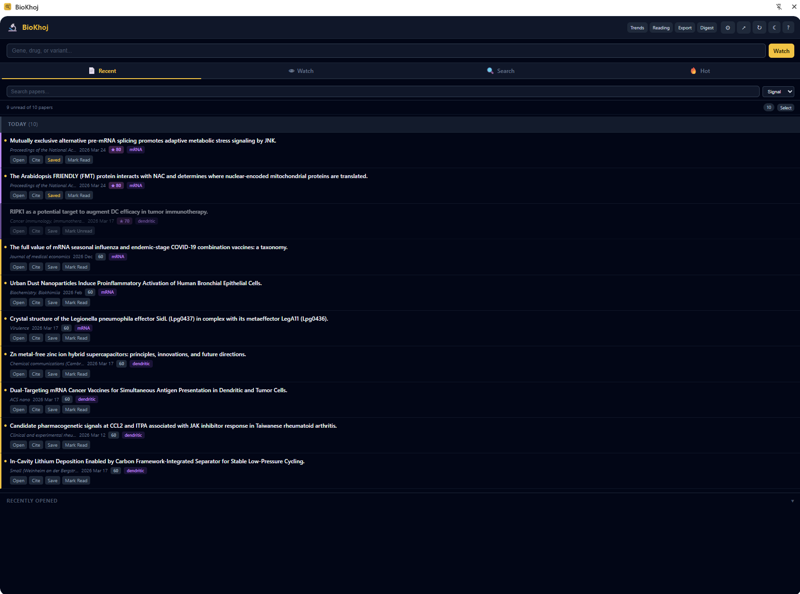
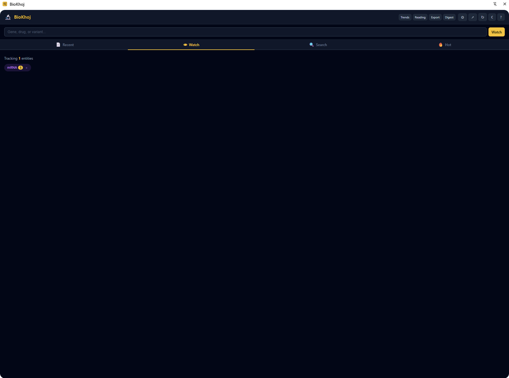
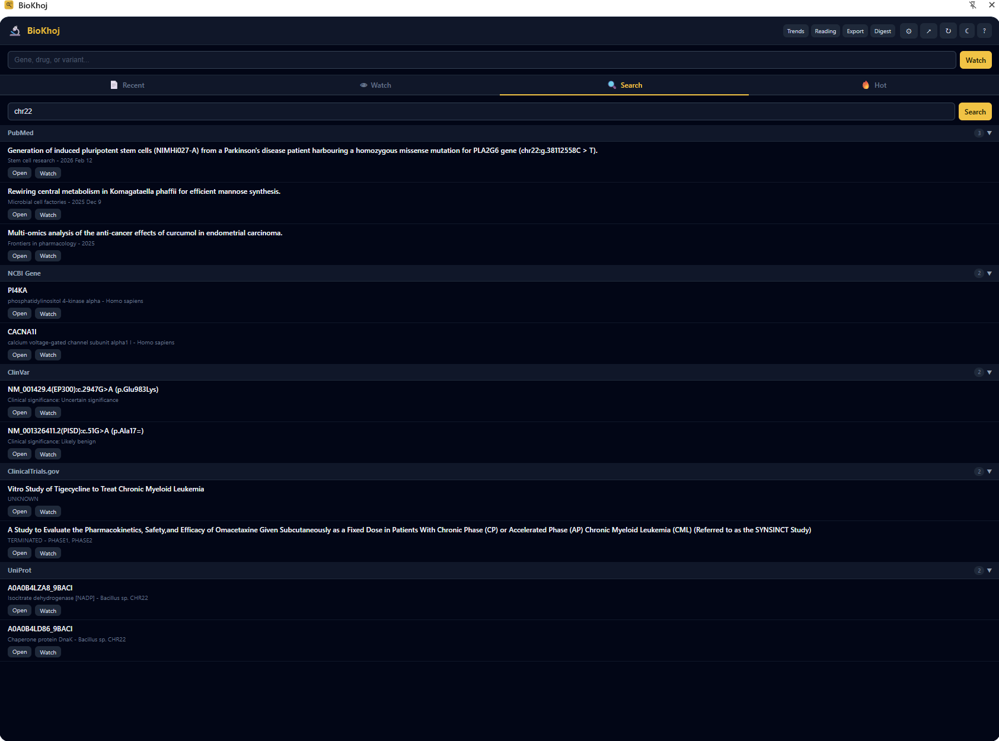
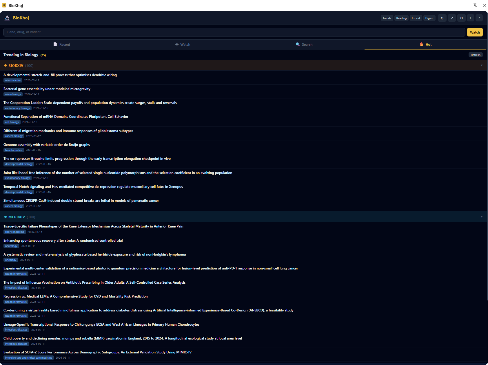
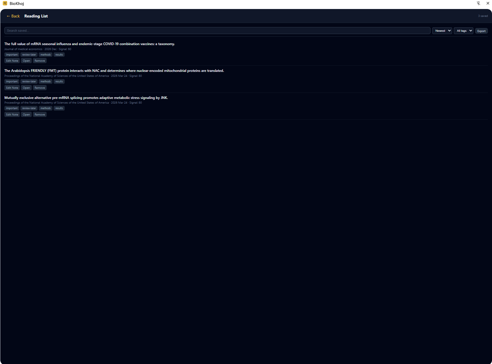
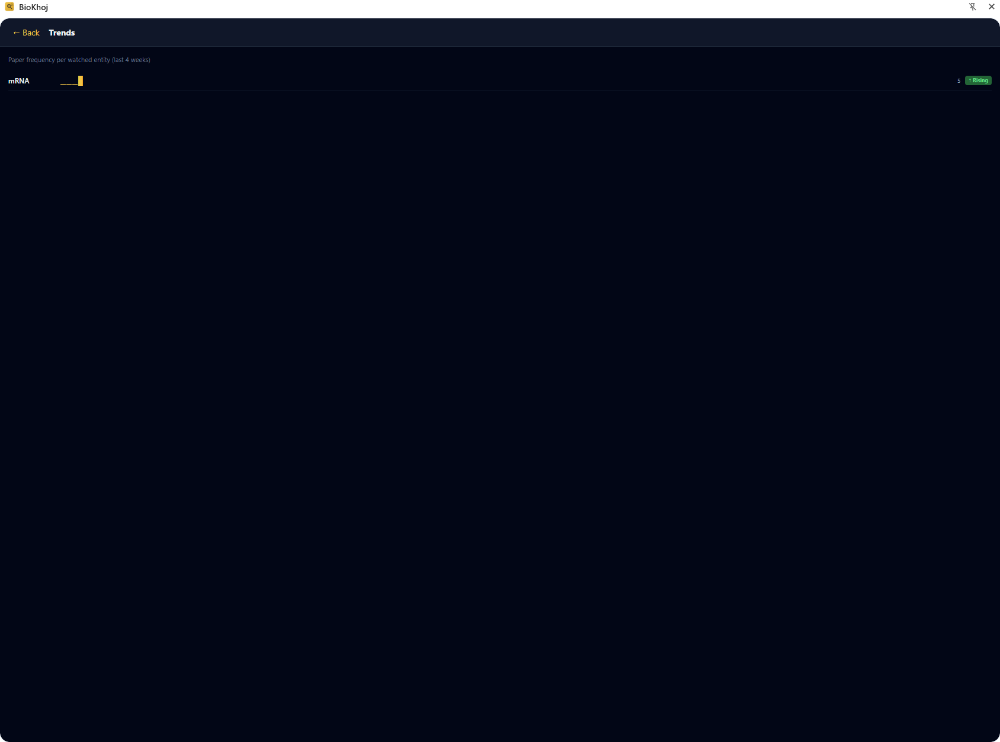
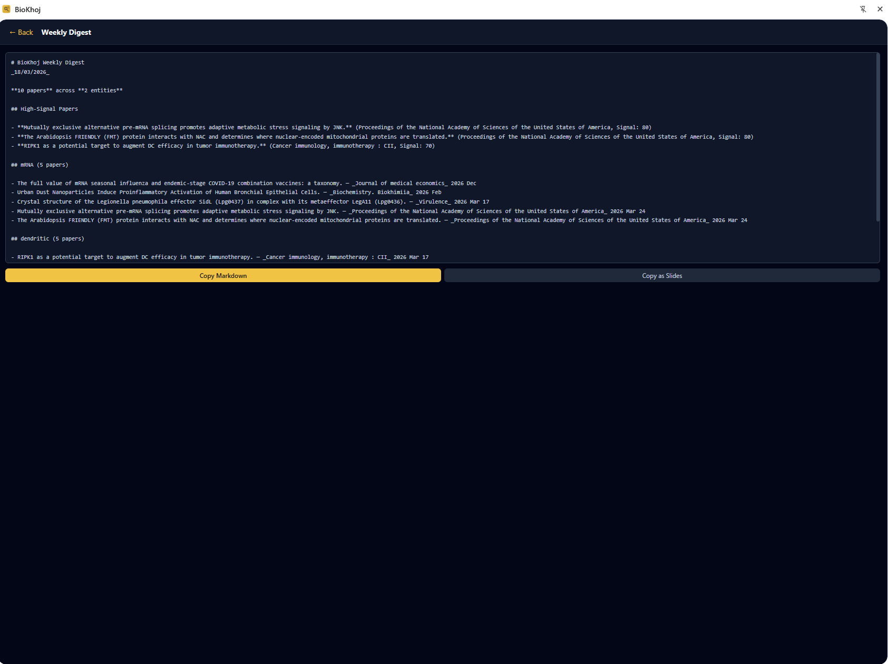
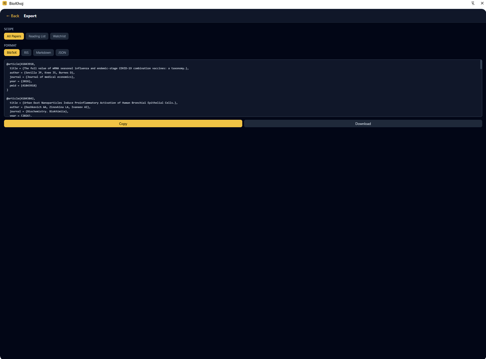
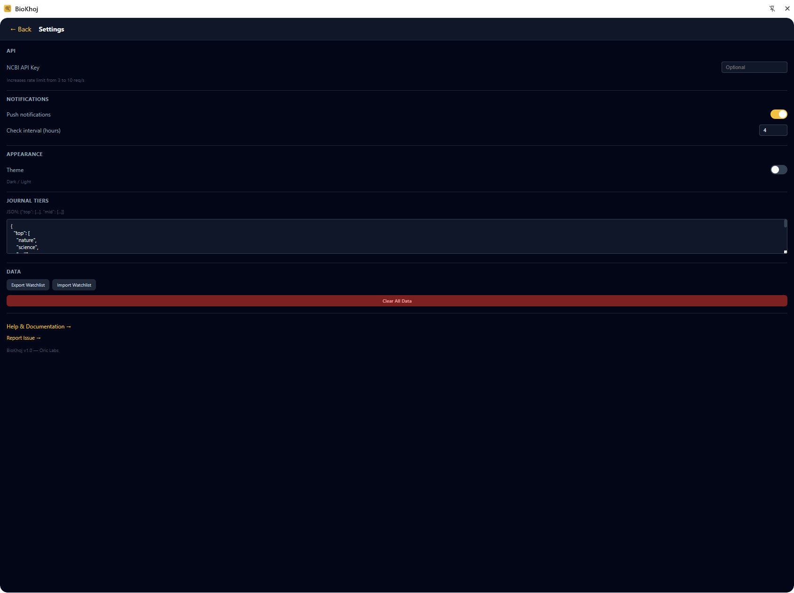

Personal literature radar — track what matters in biomedical research.
BRCA1), disease (glioblastoma), drug, pathway, or any biomedical conceptYour paper feed. Papers are grouped by date (Today, Yesterday, This Week, Older) and sorted by relevance.
This is the default tab when opening the sidebar normally.

Manage your tracked entities. Each entity is shown as a colored chip.
The sidebar opens directly to this tab when you use "Watch in BioKhoj" from the right-click menu.

Unified database search across multiple biomedical sources in a single query:
Results from all databases appear together, grouped by source. Click any result to open the full record.

Trending preprints and recent papers from multiple sources:
Each source has a collapsible, color-coded header. Expand or collapse individual sources to focus on what you care about. Papers are ranked by attention and recency within each source.

The Recent tab supports explicit paper management via select mode:
Select mode exits automatically after a delete action, or click "Cancel" to exit without changes.
At the bottom of the Recent tab, a collapsible "Recently Opened" section shows the last 15 papers you clicked on.
Entity chips use hash-based deterministic colors from an 8-color palette. The same entity always gets the same color everywhere:
Colors are computed from the entity name, so BRCA1 always appears in the same hue regardless of where it is displayed. No configuration needed.
Selected text — select any text on a webpage, then right-click:
Links to papers — right-click any PubMed, bioRxiv, or DOI link:
These actions work on any webpage — PubMed, journal sites, Wikipedia, lab wikis, or anywhere you encounter a term or paper link.
When the sidebar is narrower than 300px, tab labels are hidden and only icons are shown. This keeps the tab bar usable even in very narrow sidebar configurations. All functionality remains the same.
The extension sidebar provides the core experience. For advanced features, open the full BioKhoj app:
Open BioKhoj at lang.bio/biokhoj
The full app includes:





Your watchlist syncs between the extension and PWA via shared local storage.
BioKhoj — personal literature radar for biomedical research.
Built by Oric Labs. Part of the BioLang ecosystem.
Report issues: GitHub Issues
For full documentation including Signal Score formula, co-mention algorithms, and all settings, see the complete help page.